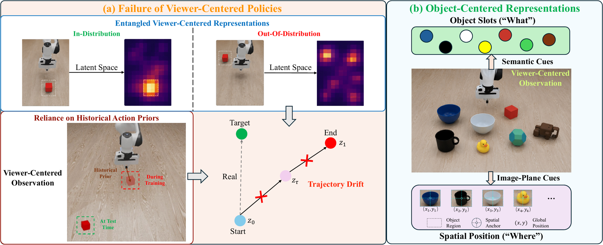
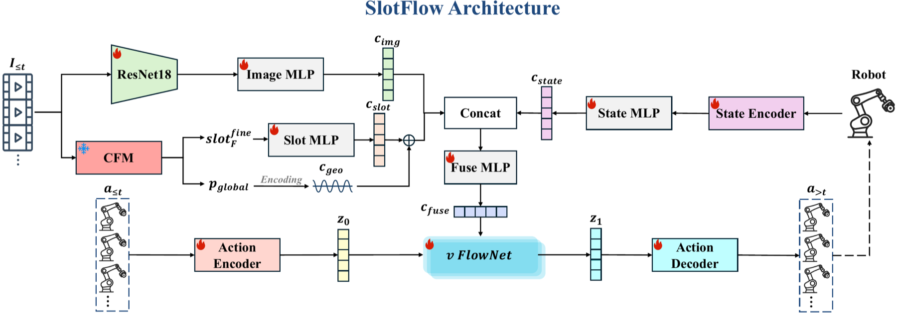

[CoRL 2026] Object-Centric Conditioning for Visuomotor Flow Matching
1 UCAS 2 Institute of Automation, CAS
3 Foundation Model Research Center, CAS 4 CAIR, HKISI, CAS 5 MUST

Overview
SlotFlow is an object-centric flow-matching policy for robust and efficient visuomotor manipulation. It combines semantic object slots, image-plane spatial cues, and cascaded foveated perception with history-conditioned flow generation.
Pipeline

Results
TODO: Add a compact quantitative-results figure or table.
Video
TODO: Add an embedded project video if desired.
BibTeX
@inproceedings{li2026objectcentric,
title = {Object-Centric Conditioning for Visuomotor Flow Matching},
author = {Li, Jijie and Yang, Xu and Zou, Junhong and Zhao, Chunhai and Zhao, Chaoyang and Lei, Zhen and Zhu, Xiangyu},
booktitle = {Proceedings of the Conference on Robot Learning},
year = {2026}
}